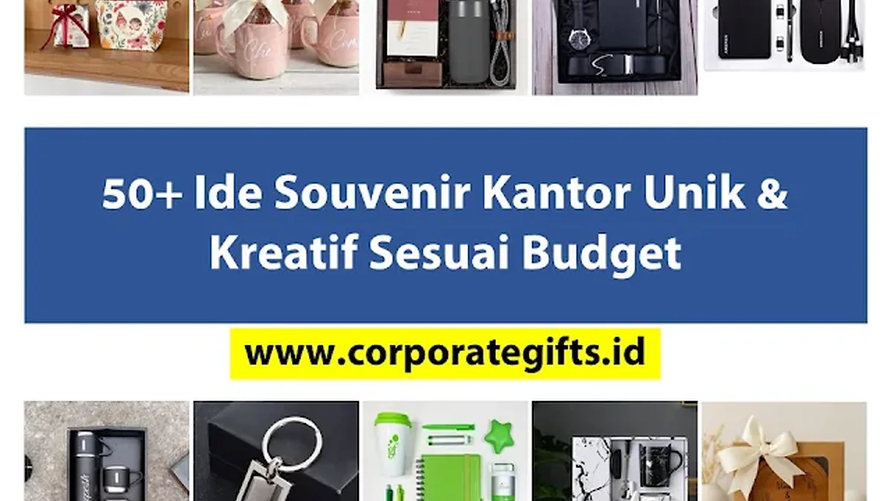

Corporate Gifts ID - Menemukan ide souvenir kantor untuk acara rapat kerja, gathering tahunan, atau apresiasi klien yang itu-itu saja seringkali terasa membosankan. Memberikan pulpen plastik dan buku catatan biasa memang fungsional, namun jarang meninggalkan kesan mendalam bagi penerimanya.
Kunci utama kesuksesan program corporate gifting terletak pada relevansi produk dengan jenis acara, sentuhan kreativitas desain, serta kesesuaian dengan alokasi anggaran perusahaan. Melalui katalog produk CorporateGifts.ID, kami merangkum lebih dari 50 ide souvenir kantor unik yang dikelompokkan secara sistematis berdasarkan tingkatan budget, kategori acara, dan tren modern terkini.
Poin Kunci Pemilihan Souvenir Kantor Kreatif:
- Segmentasi Anggaran: Alokasi biaya yang tepat (< Rp50.000 untuk event massal, Rp50.000 - Rp100.000 untuk raker/seminar, dan > Rp100.000 untuk klien VIP).
- Fungsionalitas Tinggi: Pilih barang yang benar-benar digunakan dalam aktivitas kerja harian guna memaksimalkan brand recall.
- Sentuhan Personalisasi: Tambahkan grafir nama penerima atau custom packaging untuk meningkatkan perceived value cinderamata.
Ide Souvenir Kantor Berdasarkan Alokasi Budget
Menyesuaikan pilihan item cinderamata dengan pagu anggaran perusahaan adalah langkah awal yang sangat krusial. Berikut inspirasi produk yang dikurasi berdasarkan tingkatan biaya:
1. Souvenir Kantor Kekinian di Bawah Rp50.000
Kategori ini sangat ideal untuk agenda berskala besar dengan ratusan peserta, seperti seminar umum, pameran dagang (expo), maupun kampanye promosi massal:
- Gantungan kunci akrilik custom logo presisi.
- Pouch serbaguna berbahan blacu/kanvas untuk kabel dan charger.
- Kipas angin mini portable USB meja kerja.
- Tanaman sukulen atau kaktus mini pemanis meja kantor.
- Card holder kulit sintetis untuk kartu e-money dan ID card.
- Set sedotan stainless steel ramah lingkungan dalam pouch kain.
- Phone stand lipat portabel untuk meja kerja.
- Pembatas buku metal tipis berukir logo (custom bookmark).
2. Ide Souvenir di Rentang Rp50.000 - Rp100.000
Pada rentang anggaran menengah ini, daya tahan material, fungsionalitas harian, dan estetika visual produk dapat ditingkatkan secara signifikan:
- Mug keramik sablon dua sisi dengan desain tipografi modern.
- Tote bag kanvas tebal dengan ritsleting dan saku dalam.
- Kaos katun combed 30s premium dengan sablon plastisol halus.
- Payung lipat anti-UV otomatis (automatic umbrella).
- Buku agenda hardcover A5 dengan pita pembatas dan kantong selip.
- Flashdisk kartu custom kapasitas 16 GB - 32 GB.
- Topi baseball katun twill dengan bordir logo timbul (3D).

Aneka varian souvenir kantor kreatif mulai dari pouch kanvas, mug custom, hingga paket gift set tumbler dan gadget kantor pintar.
3. Souvenir Kantor Premium di Atas Rp100.000
Kategori eksklusif ini ditujukan khusus untuk menjaga loyalitas klien VIP, apresiasi mitra bisnis strategis, serta pimpinan direksi:
- Tumbler stainless steel vacuum SUS 304 custom grafir tahan panas dingin 12 jam.
- Powerbank nirkabel 10.000 mAh dengan logo menyala (light-up logo).
- Hoodie atau jaket bomber fleece dengan bordir elegan.
- Bluetooth speaker mini dengan bodi kayu alami atau aluminium.
- Agenda kulit sintetis premium dengan deboss nama dan kotak hadiah hardbox.
- Ransel laptop tahan air (waterproof backpack) dengan kompartemen busa tebal.
- Diffuser aromaterapi mini dengan essential oil set.
Tabel Matriks Estimasi Budget & Rekomendasi Souvenir
Berikut rangkuman panduan alokasi anggaran dan rekomendasi produk untuk mempermudah penyusunan Rencana Anggaran Biaya (RAB):
| Tingkatan Budget | Estimasi Biaya per Unit | Rekomendasi Produk Terbaik | Target Agenda Acara | Teknik Personalisasi |
|---|---|---|---|---|
| Ekonomis (Massal) | Di bawah Rp50.000 | Gantungan kunci, cardholder, pouch kabel, mini fan | Expo promosi, seminar akbar, pameran B2B | Sablon presisi, UV digital print |
| Menengah (Standar) | Rp50.000 - Rp100.000 | Tote bag kanvas, agenda A5, mug keramik, payung lipat | Raker kantor, pelatihan internal, workshop | Bordir komputer, sablon plastisol, laser grafir |
| Eksklusif (VIP) | Rp100.000 - Rp350.000+ | Tumbler SUS 304, powerbank, leather set, jaket bomber | Apresiasi klien VIP, RUPS, welcome kit pimpinan | Laser engraving nama, gold foil deboss, hardbox |
Ide Souvenir Berdasarkan Jenis Acara & Agenda Bisnis
Selain faktor anggaran, fungsi souvenir harus selaras dengan tema dan aktivitas peserta selama acara berlangsung:
1. Untuk Rapat Kerja, Seminar, atau Workshop
Fokuskan pada perlengkapan produktivitas yang langsung terpakai saat menyimak materi:
- Paket seminar kit berisi notebook spiral, pulpen metal, dan map dokumen.
- Flashdisk kartu yang telah diisi softcopy materi presentasi dan company profile.
- Laser pointer presenter nirkabel untuk narasumber.
- Sticky notes set tematik lengkap dengan penggaris kecil.
- Botol minum tumbler agar peserta tetap terhidrasi selama sesi berlangsung.
2. Untuk Company Gathering, Outing, atau Team Building
Pilihlah item kasual yang membangun kekompakan, rasa kebersamaan, dan semangat tim:
- Kaos seragam jersey dry-fit warna cerah dengan nama divisi.
- Topi bucket hat atau kacamata hitam dengan aksen logo di gagang.
- Tas serut (drawstring bag) tahan cipratan air.
- Handuk olahraga serat mikrofiber cepat kering.
- Water bottle olahraga berkapasitas 1 liter dengan penanda waktu minum.
3. Untuk Onboarding Karyawan Baru (Welcome Kit)
Welcome kit yang dirancang apik akan memberikan sambutan hangat dan meningkatkan rasa memiliki sejak hari pertama bekerja:
- Lanyard tenun eksklusif dengan ID card holder kulit.
- Mug keramik yang dicetak nama personal karyawan.
- Buku panduan budaya perusahaan (culture handbook).
- Paket stiker laptop bernuansa nilai-nilai korporat (core values).
- Tumbler kerja stainless dengan grafir logo perusahaan.
4. Untuk Apresiasi Klien atau Mitra Bisnis
Kunci souvenir untuk relasi B2B adalah packaging mewah dan sentuhan personal:
- Paket hampers eksklusif berisi biji kopi artisan, cangkir keramik, dan cookies premium.
- Agenda kulit asli dengan grafir laser nama pimpinan mitra.
- Set peralatan makan kayu premium (wooden cutlery set) dalam boks bambu.
- Gift card elektronik atau voucher belanja merchant prestisius.
Ide Souvenir Mengikuti Tren Terkini 2026
Perkembangan preferensi konsumen menuntut perusahaan untuk lebih adaptif terhadap tren cinderamata kontemporer:
- Souvenir Ramah Lingkungan (Eco-Friendly): Penggunaan tote bag kanvas daur ulang, peralatan makan bambu, dan notebook daur ulang selaras dengan komitmen ESG (Environmental, Social, and Governance).
- Souvenir Digital & Smart Tech: Smart NFC business card, wireless charging pad, dan voucher platform digital yang ringkas serta bernilai guna tinggi bagi pekerja hybrid.
- Souvenir Pengalaman (Experiential Gifts): Memberikan voucher tiket bioskop premier, tiket wahana rekreasi, atau voucher workshop interaktif untuk dinikmati bersama keluarga.
Tips Memilih Vendor dan Eksekusi Pengadaan Tepat Waktu
Memilih ide yang menarik adalah langkah awal, namun mengeksekusinya dengan hasil cetak rapi dan jadwal pengiriman tepat waktu membutuhkan vendor profesional. Terapkan 4 tips berikut:
- Minta Sample Proofing Fisik: Sebelum masuk ke tahap cetak massal ribuan unit, pastikan vendor membuatkan sampel dummy fisik atau preview 3D mockup akurat.
- Perhatikan Lead Time Produksi: Jadwalkan pemesanan minimal 2-3 minggu sebelum hari H acara, terutama pada musim ramai akhir tahun (peak season).
- Periksa Kelengkapan Dokumen B2B: Pastikan vendor mampu menerbitkan invoice resmi, Surat Penawaran Harga (SPH), dan e-Faktur Pajak (PPN).
- Uji Kontrol Kualitas (Quality Control): Pilihlah vendor yang memiliki standar QC ketat sehingga meminimalisir risiko barang cacat atau sablon terkelupas.
Kesimpulan dan Konsultasi Pengadaan
Menemukan souvenir kantor yang unik tidak harus selalu menguras anggaran besar. Dengan perencanaan budget yang matang, pemetaan kebutuhan acara secara cermat, serta pemilihan produk yang fungsional, perusahaan Anda dapat menghadirkan cinderamata yang mengesankan bagi seluruh penerima.
Tim konsultan layanan kustomisasi CorporateGifts.ID siap mendampingi proses pengadaan cinderamata kantor Anda, mulai dari pemilihan konsep desain, pembuatan mockup visual 3D gratis, hingga pengiriman aman ke seluruh kota di Indonesia.
Pertanyaan Seputar Ide Souvenir Kantor (FAQ)
Disclaimer: Estimasi biaya dan spesifikasi item souvenir kantor dalam panduan ini dapat disesuaikan secara fleksibel dengan kebutuhan dan pagu anggaran instansi Anda melalui tim konsultan resmi CorporateGifts.ID.


-min.webp)